5 Testing
Levels of Testing
- Unit testing: One component at a time
- A component could be a method, class, or package
- If test fails, defect localized to small region
- Done early in software lifecycle, ideally when/before component is developed, and whenever it changes
- Integration/system testing: The whole system together
- Ensures components work together correctly
- Possible even if system not complete, as long as there’s some end-to-end slice of its functionality
- Other testing terms
- “Acceptance test” — test system against user requirements
- “Regression test” — make sure new version of software behaves identically to old version
JUnit
- A test case in JUnit is just a class
- Test methods are annotated with @Test
- Ideally, each test case should check one thing
- JUnit tests are completely automated
- Drawback: adds cost
- Major benefits
- Tests can be run often
- Code maintainance and evolution becomes much safer
Regression Testing
Key idea: when you find a bug
- Always tunthe test when code changes
- Write a test that exhibits the bug
Developing Test Cases
Black box testing
- Pros
- This is what we actually what the program to do
- Process not influenced by tested component
- Robust with respect to implementation changes
- Allows testers to be independent
- Cons
- Specs are notoriously complete; specs do not necessarily tell you every place the code could go wrong.
White box testing
- Pros
- This is the code we are actually running!
- Performance optimizations
- Cons
- If our code is completely missing come ket property that is in the spec, we might not even know to test it
- Tests might be overly specific to this particular implementation
- Actually used glass bos testing earlier.
Coverage Criteria
High coverage means few mistakes remain in program.
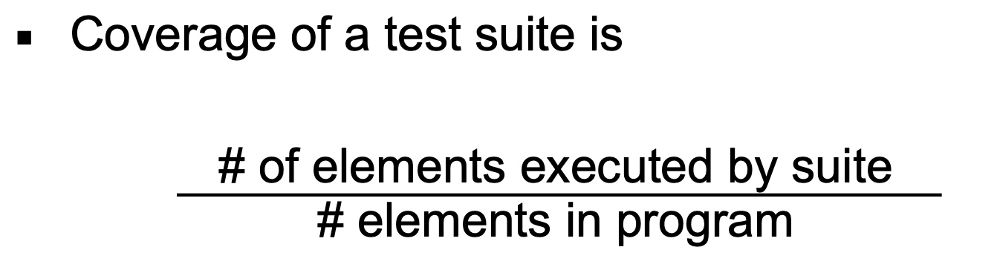
Refactoring
Motivation
-
Old-style software design process
Waterfall Model
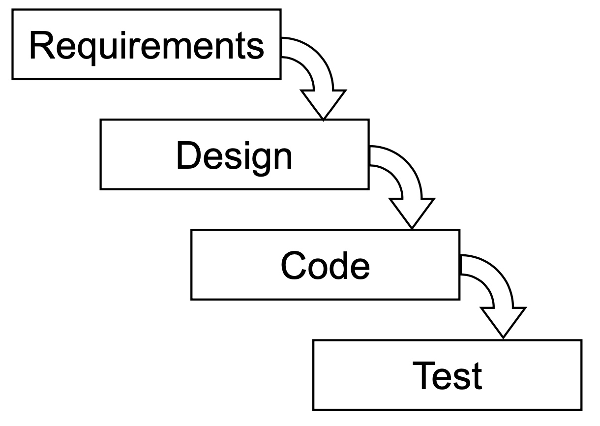 -
Good properties
- Provides structure to the software engineering process
- Lots of emphasis of careful thought and design early on
-
Bad Properties
- Requirements often not known in advance
- Designs often need to be changed
-
Result
- Strict adherence to waterfall leads to inappropriate designes
Refactoring
New approach to software design
- Come up with a resonable first design
- But then be willing to change and evolve design over time
- Refactoring enables safe design changes
- Assumption: we have a comprehensive, automatically runnable test suite
- Then we can divide code changes into two sorts
- Bug fixes or feature addtions that modify functionality
- Refactoring
- Change code design, but do not change behavior
- implies can rerun all exists tests to ensure change works
Replace Number with Constant
- New code is more readable
- Can avoid typos of we reuse magic number several times
- Might want ro add more digits
Other Refactorings
-
Move method from one class to another
-
Move method from a subclass to a superclass or the reverse
-
Extract code sequence into its own method
-
Replace conditional branching with dunamic dispatch
-
Group together a long parameter list into an object containing those values
-
Ideal time to refactor: When you want to make a change and the current design impedes the change
-
Be cautious of refactoring buggy code
-
Be cautious if you keep refactoring the same code over and over
-
Refactorings tend to be small changes; so they can’t fix every problem
6 Architecture
MVC Arch
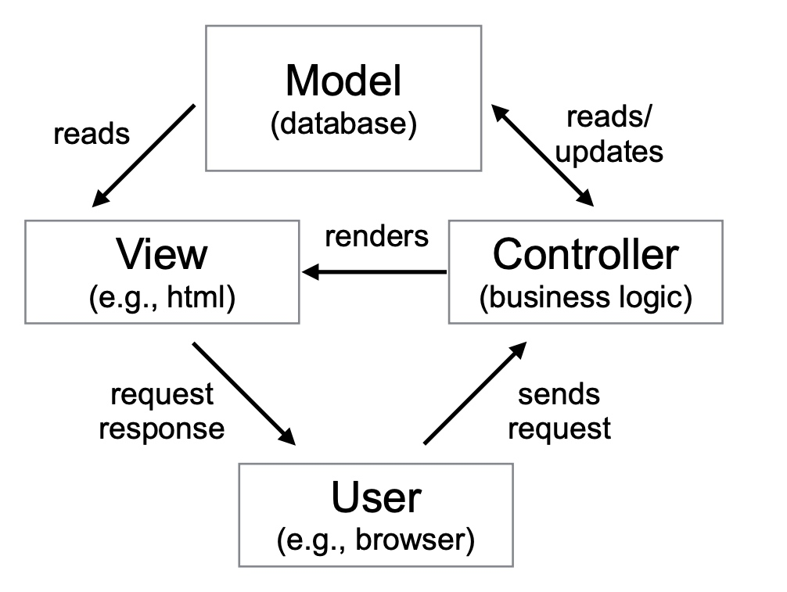
Pros and Cons
Pros
- Seperation between data and interface is key
- Views can be replaced, changed, customized, expanded
- As db is read and written, changes reflected in all views
- Scalable deployment easier, e.g., multiple controller/view instances communicate with one db'
Cons
- Several potential drawbacks
- Many kinds of changes to model require changing view and controller
- Views and controllers are closely coupled.
- Added complexity
Pipe and Filter
Components are filters, connections are the pipes.
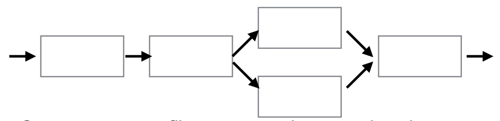
Advantages
- Overall behavior is a composition of filter behaviors
- Potentially good reuse by cerating different compositions of filters
- Can test each filter in isolation
- Filters can be replaced individually
Disadvantages
- Not good for interactive use
- Pipes are narrow. Hard to pass complex data
- Overhead for parsing/unparsing data when read from/sent to a pipe
Layered Arch
- Organized as a hierarchy
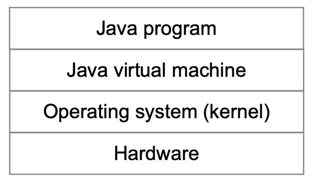
Advantages
- Good fit for system with increasing levels of abstraction
- Changing one layer affects at most two others
- Can interchange implementations of same layer interface.
Disadvantages
- May not be able to identify clean layers
- Might need to jump layers for performance or functionality
Client-Server Arch
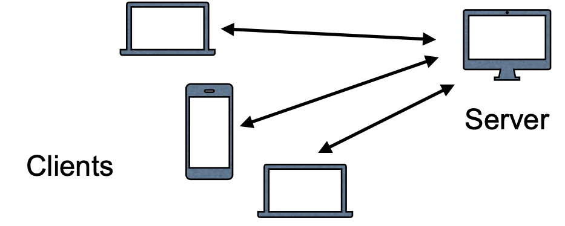
- Server is central point of failure
- Any client-to-client communication must go through server
Peer-to-Peer Arch
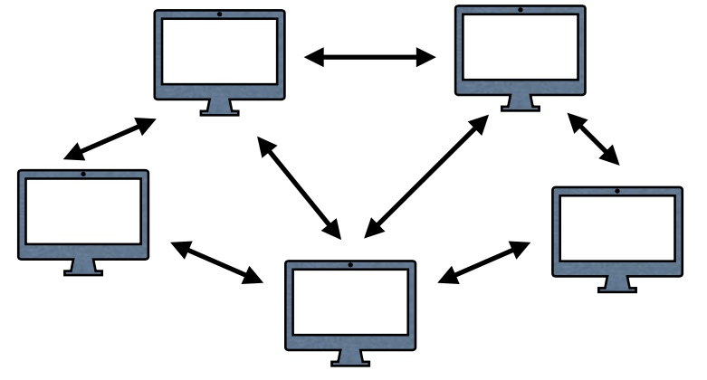
- Trust between nodes
- More equal upload/download volume compared to client server
- Location of data on network not centralized
7 Concurrency
Advantages
Performance!
Disadvantages
- Harder to think about
- Concurrency adds overhead
Basic Threads in Java
- Subclass Thread and implement run()
- Anonymous inner class
- Implement Runnable
Ordering
- within threads, ordering applier
- across threads, only ordered when
- One threads starts another
- One threads waits for another to finish
Reentrant Lock
ReentrantLock allows threads to enter into the lock on a resource more than once
Dead Lock
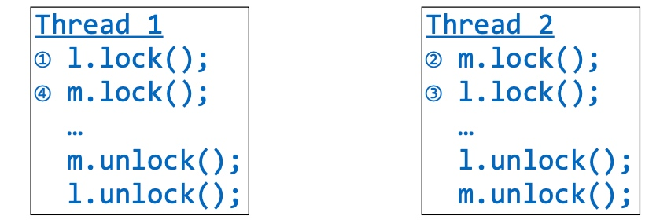
Synchronized
synchronized(obj) {body}
Obtain lock associated with obj
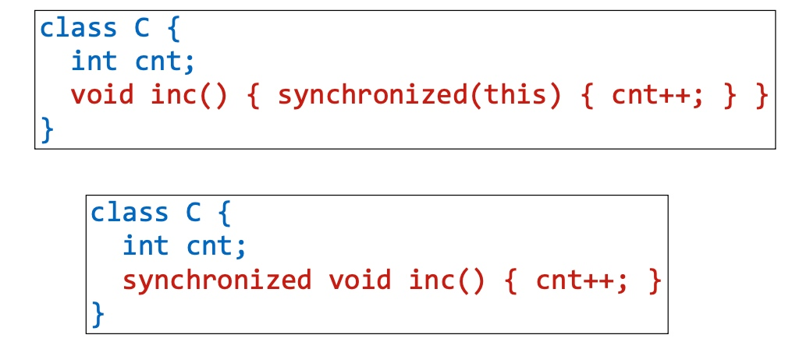
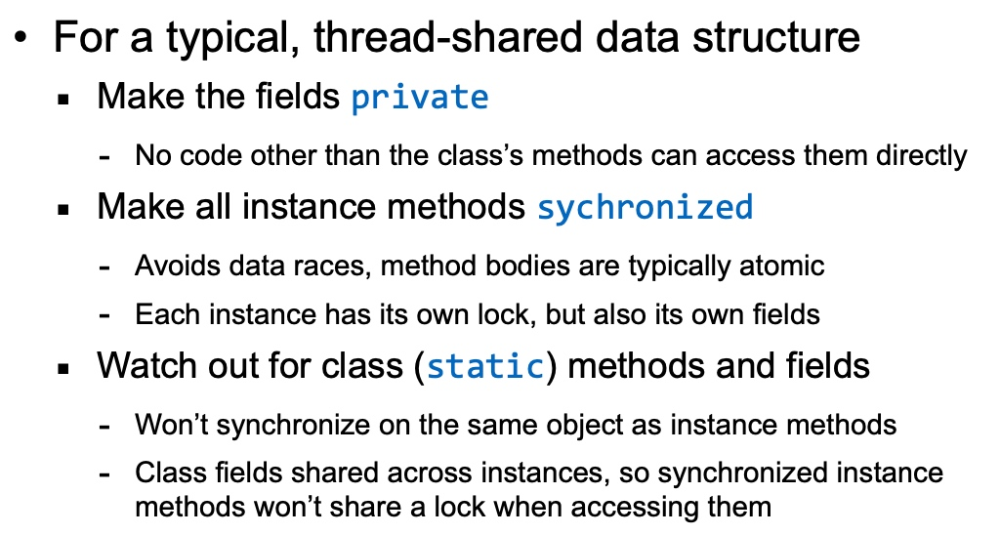
While loop + signal all = carefully use of signal
Message Passing
- Pros
- More natural for many supercomputer architectures and distributed systems
- No possibilitty of data races
- Cons
- Atomicity still problematic
- Inefficient to exchange large amount of data
8 Debugging
Debuggers
Time Travel Debuggers
Debugging as Experimentation
Simplifying Tests
Delta Debugging
If part of a test is a really big input, simplify it using a binary search-like process called delta debugging
- Cut input in half, testing each of the halves
- If one half has the same bug, throw away the other half and repeat
- If neither half has the bug, increase granularity by removing quarters instead of halves, and repeat
Split the input
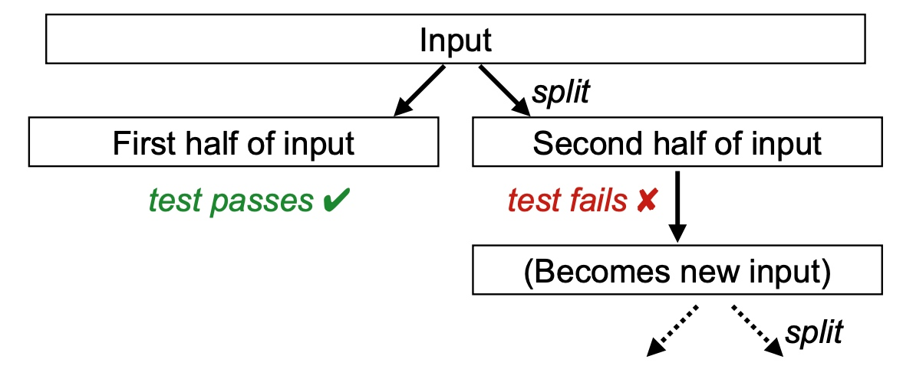
Increase Granularity
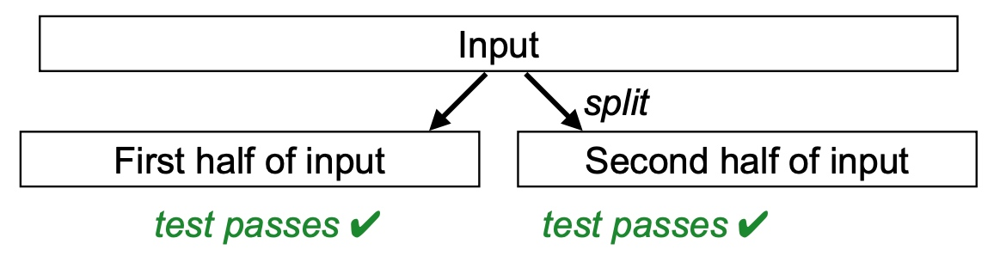
9 Security
Goal: prevent bad things from happening
Integrity
- No improper modification of data
- E.g., account balance updated only by authorized transactions, only you can change your password.
- Integrity of security mechanism is crucial
- Enforcement: access control, digital signitures
Confidentiality
- Protect information from improper release
- Limit knowledge of data or actions(secrecy)
- Enforement: access control, encryption
- Hard to enfore after the fact
Availability
- System muct respond to requests
- I.e., do not ensure confidentiality and integrity by unplugging your computer!